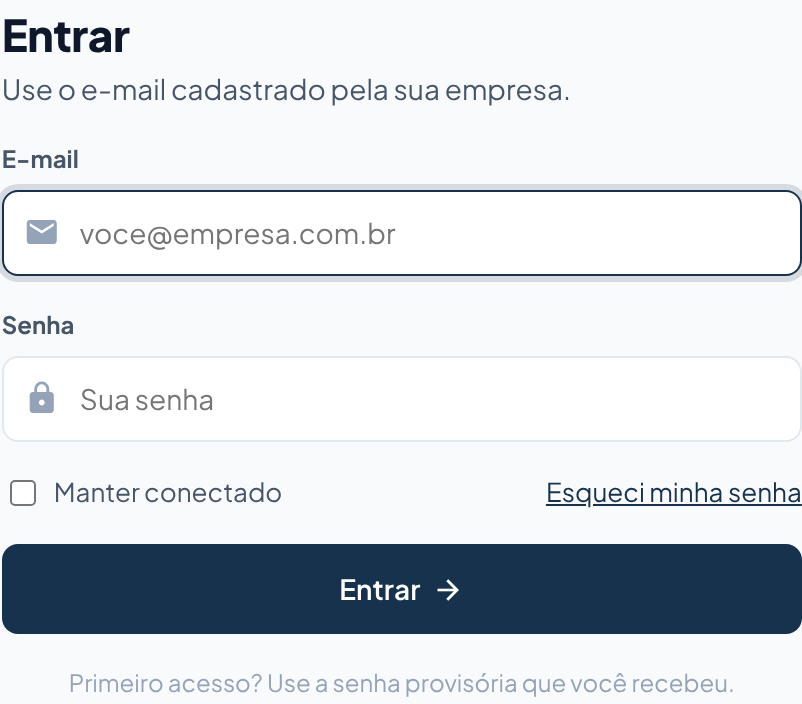
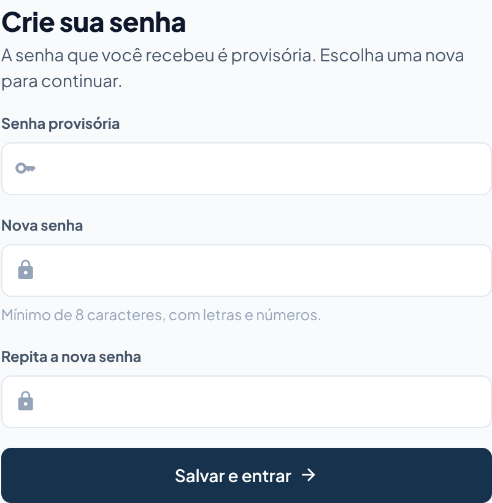
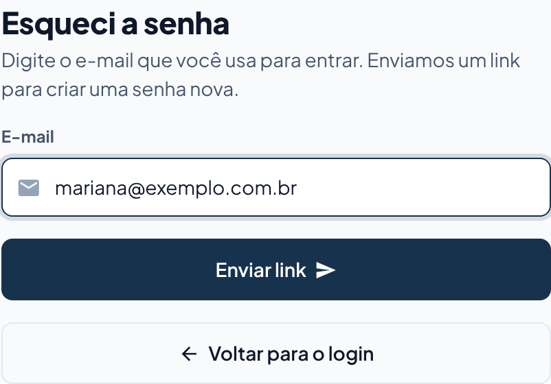
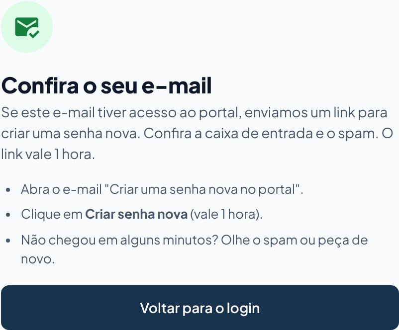

Primeiro acesso e "esqueci a senha"
Como entrar no portal pela primeira vez, criar a sua senha e recuperar o acesso se esquecer.
checklist Antes de começar
- Você precisa de uma mensagem com o endereço do portal, o seu e-mail e uma senha provisória. Ela é enviada pelo responsável da sua empresa ou pelo suporte.
- Não recebeu? Peça ao responsável da sua empresa (veja Usuários da empresa).
Primeiro acesso
-
Entre com a senha provisória
Abra o endereço do portal, digite o seu e-mail e a senha provisória e clique em Entrar.
Marque Manter conectado só no seu computador, nunca em computador de outras pessoas.

-
Crie a sua senha
Na primeira vez o portal pede uma senha nova. Digite a provisória, depois a nova duas vezes (mínimo de 8 caracteres, com letras e números) e clique em Salvar e entrar.

Esqueci a senha
-
Peça o link
Na tela de entrada, clique em Esqueci minha senha, digite o seu e-mail e clique em Enviar link.

-
Abra o e-mail e crie a senha nova
Abra o e-mail "Criar uma senha nova no portal" e clique em Criar senha nova. O link vale 1 hora. Digite a senha nova duas vezes e salve.

Trocar a senha estando dentro do portal
Em Usuários, no quadro Minha senha, digite a senha atual e a nova duas vezes e clique em Trocar minha senha. Os outros aparelhos conectados com a sua conta saem.
Se der errado
| O que aconteceu | O que fazer |
|---|---|
| "Muitas tentativas com senha errada". | Depois de 5 senhas erradas o acesso fica bloqueado por 15 minutos. Espere ou use "Esqueci minha senha". |
| O e-mail do link não chegou. | Olhe o spam e espere alguns minutos. Se não chegar, peça de novo ou peça ao responsável da empresa uma nova senha. |
| O link diz que venceu. | Ele vale 1 hora. Peça outro em "Esqueci minha senha". |
| A senha nova não é aceita. | Use pelo menos 8 caracteres, misturando letras e números, e digite igual nos dois campos. |
| Ao clicar em "Esqueci minha senha" aparece "Peça ao responsável da sua empresa...". | O envio de e-mails ainda não foi configurado. Peça ao responsável da empresa uma Nova senha (tela Usuários) ou fale com o suporte. |